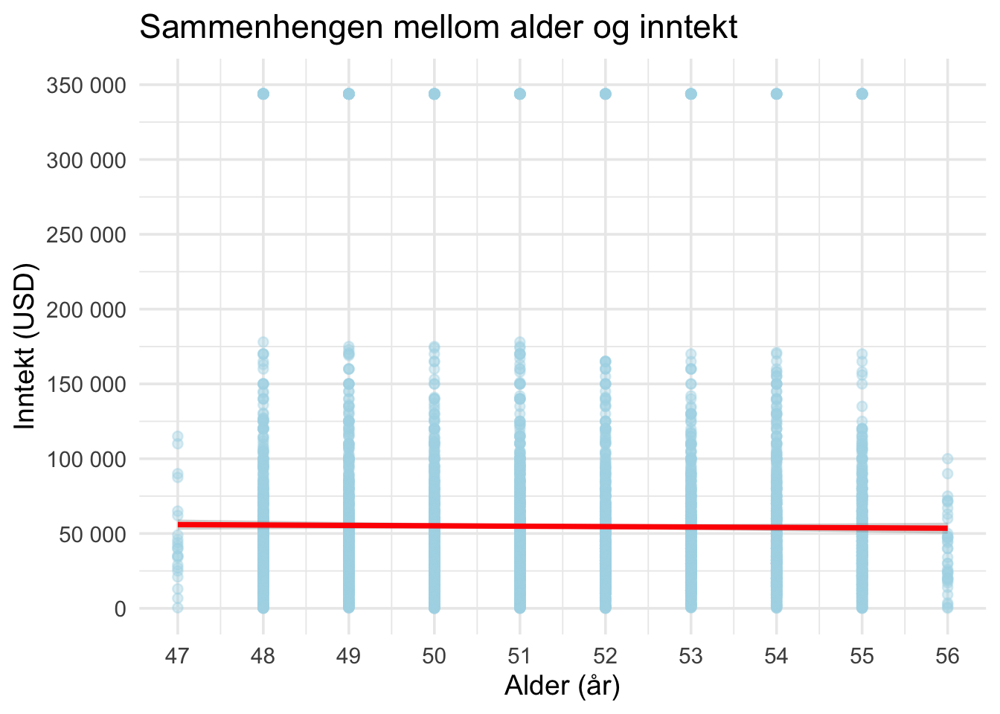
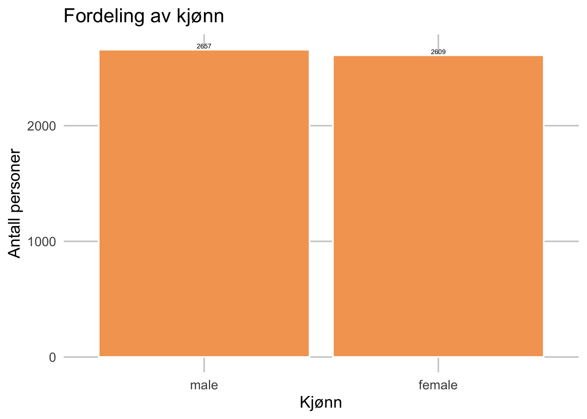
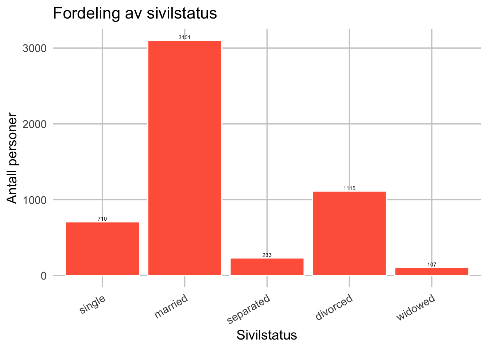

# A tibble: 7,006 × 8
income height weight age marital sex education afqt
<int> <dbl> <int> <int> <fct> <fct> <int> <dbl>
1 19000 60 155 53 married female 13 6.84
2 35000 70 156 51 married female 10 49.4
3 105000 65 195 52 married male 16 99.4
4 40000 63 197 54 married female 14 44.0
5 75000 66 190 49 married male 14 59.7
6 102000 68 200 49 divorced female 18 98.8
7 0 74 225 48 married male 16 82.3
8 70000 64 160 54 divorced female 12 50.3
9 60000 69 162 55 divorced male 12 89.7
10 150000 69 194 54 divorced male 13 96.0
# ℹ 6,996 more rowsSammenhenger mellom inntekt, alder, kjønn og sivilstatus
Description of data
- Første punkt, laster inn og rydder datassettet ‘heights’
Laster inn og rydder datassettet ‘heights’
Datasettet ‘heights’ som benyttes i denne oppgaven er hentet fra pakken ‘modelr’. Datasettet inneholder informasjon om enkeltpersoner, og består av 7006 observasjoner og 8 variabler: inntekt, høyde, vekt, alder, sivilstatus, kjønn, utdanningsnivå og AFQT-skår.
Fire variabler, inntekt, alder, kjønn og sivilstatus, er relevante for denne oppgaven. Før analysen ble variablene i datasettet gitt nye navn, og datasettet ble ryddet ved å fjerne observasjoner med manglende verdier (NA) og nullverdier. De resterende observasjonene utgjør grunnlaget for videre analyse.
# A tibble: 5,266 × 4
inntekt alder kjonn sivilstatus
<int> <int> <fct> <fct>
1 19000 53 female married
2 35000 51 female married
3 105000 52 male married
4 40000 54 female married
5 75000 49 male married
6 102000 49 female divorced
7 70000 54 female divorced
8 60000 55 male divorced
9 150000 54 male divorced
10 115000 53 female married
# ℹ 5,256 more rowstibble [5,266 × 4] (S3: tbl_df/tbl/data.frame)
$ inntekt : int [1:5266] 19000 35000 105000 40000 75000 102000 70000 60000 150000 115000 ...
$ alder : int [1:5266] 53 51 52 54 49 49 54 55 54 53 ...
$ kjonn : Factor w/ 2 levels "male","female": 2 2 1 2 1 2 2 1 1 2 ...
$ sivilstatus: Factor w/ 5 levels "single","married",..: 2 2 2 2 2 4 4 4 4 2 ... inntekt alder kjonn sivilstatus
Min. : 45 Min. :47.00 male :2657 single : 710
1st Qu.: 23425 1st Qu.:49.00 female:2609 married :3101
Median : 40000 Median :51.00 separated: 233
Mean : 54819 Mean :51.28 divorced :1115
3rd Qu.: 65000 3rd Qu.:53.00 widowed : 107
Max. :343830 Max. :56.00 Etter at datasettet ble filtrert og tilpasset analysen, består det nå av 5 266 observasjoner og fire variabler: inntekt, alder, kjønn og sivilstatus.
Resultatene fra summary viser følgende: Inntekt varierer fra 45 til 343 830 USD, med en median på 40 000 USD og et gjennomsnitt på 54 819 USD. Alder varierer mellom 47 og 56 år, med en median på 51 år. Kjønn er jevnt fordelt, med 2 657 menn og 2 609 kvinner. Sivilstatus viser at flertallet (3 101 personer) er gift, mens 710 er single, 1 115 er skilt, 233 separert og 107 enker/enkemenn.
Etter rensingen består datasettet dermed av et balansert og ryddig utvalg som danner grunnlaget for videre beskrivelse og analyse av sammenhengen mellom inntekt, alder, kjønn og sivilstatus.
- Andre punkt, beskrivelse av data
beskriver variabler inntekt og alder
Variable | N | Mean | Std. Dev. | Min | Pctl. 25 | Pctl. 50 | Pctl. 75 | Max |
|---|---|---|---|---|---|---|---|---|
character | character | character | character | character | character | character | character | character |
Inntekt (USD) | 5266 | 54819 | 58394 | 45 | 23425 | 40000 | 65000 | 343830 |
Alder (år) | 5266 | 51 | 2.2 | 47 | 49 | 51 | 53 | 56 |
n: 2 | ||||||||
Denne tabellen viser en deskriptiv oppsummering av de numeriske variablene i datasettet: inntekt og alder.
Gjennomsnittlig inntekt i utvalget er 54 819 USD, med en median på 40 000 USD og en stor spredning (standardavvik på 58 394 USD). Noen få personer har svært høye inntekter 343 830 USD som trekker gjennomsnittet opp. Alderen varierer mellom 47 og 56 år, med et gjennomsnitt på 51 år.
Resultatene viser at deltakerne er omtrent like gamle, men at inntektene varierer mye.

Variabelen inntekt representerer den årlige inntekten (målt i USD) for hver observasjon i datasettet.
Figuren fordeling av inntekt viser hvordan inntekten fordeler seg blant 5 266 personene i datasettet. De fleste observasjonene ligger mellom 20 000 og 80 000 USD, som representerer hovedtyngden av inntektene. Samtidig ser vi at et lite mindretall tjener vesentlig mer enn flertallet. De få personer har svært høye inntekter, helt opp mot over 300 000 USD, noe som trekker gjennomsnittet betydelig opp. Derfor er fordelingen høyreskjev.

Variabelen alder viser deltakernes alder målt i hele år.
Figuren fordeling av alder viser at aldersfordelingen mellom 47 til 56 år, er jevn og konsentrert innenfor et smalt intervall. De fleste observasjonene ligger mellom 48 og 55 år.Det er få personer som er 47 eller 56 år. Aldersspennet er lite, noe som betyr at de fleste personene i datasettet er omtrent like gamle.
- Tredje punkt, beskriver variabler sivilstatus og kjønn
beskriver variabler sivilstatus og kjønn
Variable | N | Percent |
|---|---|---|
character | character | character |
Sivilstatus | 5266 | |
... single | 710 | 13% |
... married | 3101 | 59% |
... separated | 233 | 4% |
... divorced | 1115 | 21% |
... widowed | 107 | 2% |
Kjønn | 5266 | |
... male | 2657 | 50% |
... female | 2609 | 50% |
n: 9 | ||
Denne tabellen viser en deskriptiv oppsummering av de kategoriske variablene i datasettet: sivilstatus og kjønn.
Flertallet av personene i datasettet er gift (married) — rundt 59 % av utvalget (3 101 personer). 710 personer (13 %) er single, mens 1 115 (21 %) er skilt (divorced). De resterende er separert (233 personer) og enkemann/enke (107 personer).
Fordelingen mellom kjønn er nesten helt jevn, med 2 657 menn (50,5 %) og 2 609 kvinner (49,5 %).
Variable | N | Mean | Std. Dev. | Min | Pctl. 25 | Pctl. 75 | Max |
|---|---|---|---|---|---|---|---|
character | character | character | character | character | character | character | character |
kjonn: male | |||||||
Inntekt (USD) | 2657 | 68514 | 71686 | 72 | 30000 | 80000 | 343830 |
Alder (år) | 2657 | 51 | 2.2 | 47 | 49 | 53 | 56 |
kjonn: female | |||||||
Inntekt (USD) | 2609 | 40871 | 35563 | 45 | 19000 | 54000 | 343830 |
Alder (år) | 2609 | 51 | 2.2 | 47 | 49 | 53 | 56 |
n: 7 | |||||||

Variabelen kjønn beskriver fordelingen mellom menn og kvinner i datasettet.
Figuren fordeling av kjonn viser at kjønnsfordelingen av 5 266 observasjonene i datasettet er nesten helt balansert. Av de 5 266 observasjonene er det 2 657 menn og 2 609 kvinner. Forskjellen mellom gruppene er dermed svært liten, noe som betyr at analysen ikke vil være skjev med hensyn til kjønn.
Variable | N | Mean | SD |
|---|---|---|---|
character | character | character | character |
sivilgruppe: Gift | |||
Inntekt (USD) | 3101 | 62931 | 65476 |
Alder (år) | 3101 | 51 | 2.2 |
sivilgruppe: Ikke gift | |||
Inntekt (USD) | 2165 | 43199 | 43880 |
Alder (år) | 2165 | 51 | 2.2 |
n: 7 | |||

Variabelen sivilstatus viser 5266 deltakernes ekteskapsstatus og består av fem kategorier: single, married, separated, divorced og widowed.Obeservasjonene som er gift har høyere gjennomsnittsinntekt enn de som ikke er gift. Gruppen “Ikke gift” inkluderer personer som er single, skilt, separert eller enke/enkemann.
Figuren fordeling av sivilstatus viser hvordan observasjonene fordeler seg mellom disse gruppene. Det fremgår tydelig at flertallet av personene er gift (married), med 3 101 observasjoner, noe som utgjør nærmere 59 prosent av utvalget. Videre er 1 115 personer skilt (divorced) og 710 single (never married), mens kategoriene separated (233) og widowed (107) utgjør en mindre andel.
Fordelingen av sivilstatus viser dermed et mønster som er vanlig i voksenbefolkningen, der de fleste er gift eller tidligere gift.